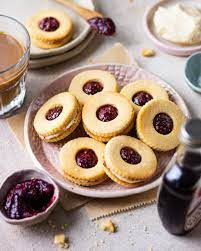

Home-made Jim Jam Biscuits

Description
As an Indian kid growing up, watching channels like Cartoon Network or Pogo
was an important part of the day. These channels, though, had more advertisements
than the actual television programmes for children. I vividly remember seeing ads
for biscuits such as the jimjam biscuits and wanting to eat them immediately.
My parents did realise the whole marketing tactics to which I was blissfully
oblivious and never really got me any jim-jam biscuits >:(
To all the parents and kids stuck in this same situation, I bring to you,
drumroll please, the solution. Yes. Homemade jimjam biscuits. Have fun
along with kids following along this easy recipe and realise that homemade
biscuits>>>>>>>>
Ingredients
Biscuit
- 1 1/2 cups maida
- 5 tbsp cold butter
- 1/2 cup condensed milk
Filling
- 1 cup powdered sugar
- 1/4 cup cold butter
- 1 tsp vanilla
- few drops of milk
Jam
- 3/4 frozen raspberries
- 1 tbsp sugar
- 2 tbsp water
Steps
-
To make the biscuit dough, combine cold butter and flour in a bowl. Using your fingers,
break down butter cubes into the flour and keep doing it till you reach a sandy
consistency.
-
Add in condensed milk in batches and bring the dough together. Once combined, cover the
bowl and chill it in the refrigerator.
- For the cream filling, combine cold butter and icing sugar in a bowl. Mix the two till
you reach a sandy consistency. Add in vanilla and milk to bring everything together.
Set aside.
-
To make the raspberry jam, in a saucepan over medium heat add in frozen raspberries,
sugar, and water. Cook this down till you reach a thick consistency. You can also add in
cornflour to make the jam thick and let it cook for another minute or so. Set it aside.
- Once the biscuit dough has chilled, start preheating your oven at 180 degree Celsius.
-
Take out the biscuit dough and using a rolling pin, roll it to about half an inch thick,
in between two parchment sheets.
-
Once rolled out, using a cookie cutter, cut out individual biscuits and keep the excess
dough aside.
-
Now using the back of a piping tip, cut out a small center from half of the biscuits.
These will be the top biscuits of our jim jams and will allow space for the jam filling.
-
You can re roll the excess dough and repeat this process till all you dough has been
used.
- Bake these for 10-12 minutes or until golden brown on the edges.
- Let them cool down completely
Assembling
-
For assembling, take one biscuit that will be the base of the jim jams. Using the back
of a spoon or an offset spatula, smear the cream filling all over the base.
-
Transfer the jam filling in a piping bag and pipe a generous dollop in the center of
the base biscuit.
-
Then, simply cover it with the top biscuit shell, the one with the center cut out.
Keep repeating these steps till all your biscuits are ready.
- Enjoy!